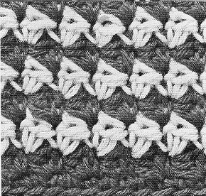

Houndstooth Afghan Pattern MATERIALS: Crochet Hook, Size K. Afghan measures 50 x 63 inches. GAUGE: 8 group sts = 7 inches; 2 rows = 1 inch. Be sure to check your gauge before starting afghan. Use any size hook which will obtain the stitch gauge above. Starting at narrow edge with Paddy Green, ch 122, having 2 ch sts to 1 inch. 1st row - right side: In 2nd ch from hook make sc and hdc group st made; * skip next ch, make a group st in next ch. Repeat from * across to within last 2 ch, skip next ch, draw up a loop in next ch, drop Paddy Green, with Nile Green, yarn over and draw through both loops on hook - color changed in last sc - 60 group sts and 1 sc. Ch 1, turn. 2nd row: Working over the unused color to conceal it and being careful to carry this yarn loosely, make a group st in first sc and in the sc of each group st across to within last group st, skip next h dc, change color in last sc as before. Ch 1, turn. 3rd row: With Paddy Green, repeat 2nd row. Repeat 2nd and 3rd rows alternately until total length is 62 inches, ending with a Paddy Green row. Do not change color at end of last row. Break off Nile Green and fasten. Edging: With Paddy Green make 2 sc in same sc where last sc was made, work-ing along side edge, make a group st in end st of every Paddy Green row, ending with sl st in first ch of starting chain. Break off and fasten. With right side facing and working along opposite side edge, attach Paddy Green to last ch of starting chain and work to corre-spond with opposite side, ending with sc in same place where first sc of last row was made. Do not break off. BORDER Making 3 sc in next sc and at each corner, sc evenly around entire outer edge. Join with sl st to first sc. Break off and fasten. Block to measurements.  © 2014-2021 doilybox.com. All Rights Reserved | Privacy Policy HOME |